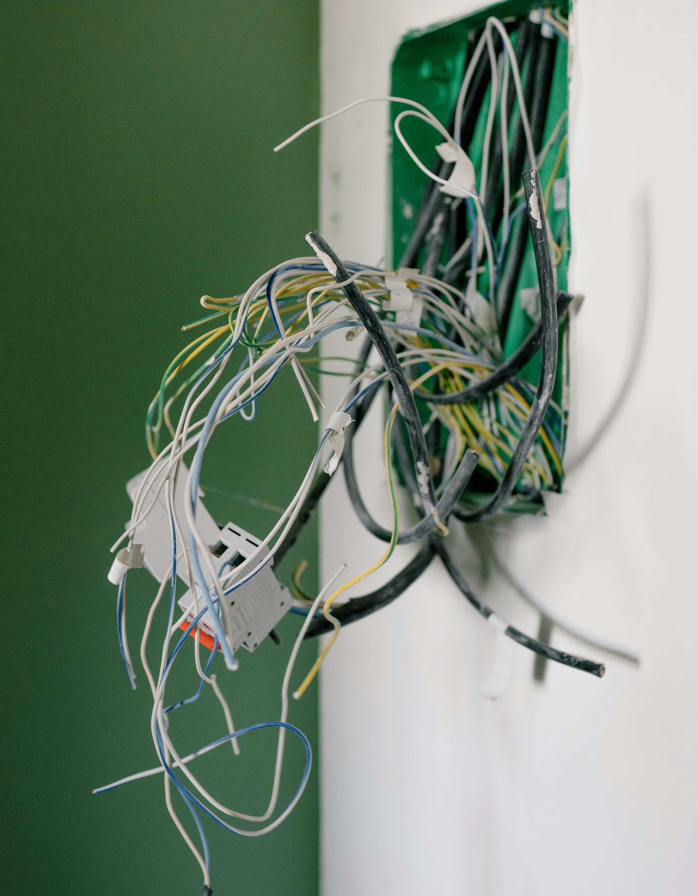

Mapa de Riscos
O mapa de riscos é uma representação gráfica dos perigos existentes no ambiente de trabalho. Ele é essencial para prevenção de acidentes e melhoria das condições de trabalho.
Riscos Físicos:
Ruídos, vibrações, radiações, temperaturas extremas.
Riscos Químicos:
Poeiras, fumos, neblinas, gases e vapores tóxicos.
Riscos Biológicos:
Bactérias, fungos, vírus e parasitas.
Riscos Ergonômicos:
Esforço repetitivo, levantamento de peso, postura inadequada.
Riscos de Acidente:
Máquinas sem proteção, instalações elétricas expostas, quedas.
